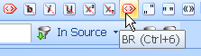
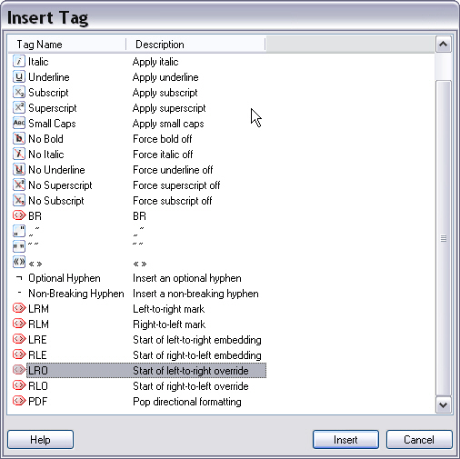

Using QuickInserts
The QuickInsert feature allows users to insert placeholder tags, tag pairs, special characters, etc. into the target text with the click of a toolbar button or through a keyboard shortcut. That way users have easy access to, for example, commonly used special characters that are difficult to type on their keyboards.
Trados Studio allows you to insert tags that occur in a source segment into the corresponding target segment. However, sometimes you may need to insert tags or text (e.g. special characters) that do not occur in the source segment. Example: The source segment does not contain bold formatting, however, you want to apply bold formatting in the translation to highlight a particular string. Another example: The source segment uses straight quotes, while the target language requires smart quotes. Both examples are use cases for QuickInserts. Through QuickInserts, users can quickly insert the tags or characters that they require in the target segment.
When developing a file type plug-in you should consider which tags or special characters are most likely to be used in the file format that you need to process. Most file formats will use common character formatting such as bold, italics, and underline. It might therefore make sense to define QuickInserts for those particular types of character formatting. Very often, users require e.g. smart quotes , which may be difficult to type on certain keyboards. It might therefore also make sense to define special QuickInserts e.g. for French quotes, smart quotes, etc.
End users can define and customize QuickInserts themselves through the application GUI up to a certain degree. However, some things can only be done programmatically by defining them in the file type plug-in assembly. For example, Trados Studio allows users to define QuickInserts for single characters, strings and string pairs. Defining QuickInsert items for tags (e.g. for applying bold formatting) is currently only possible programmatically, not through the application user interface.

The QuickInsert toolbar as defined for the Microsoft Word file type. Through the toolbar buttons you can insert, for example, quotes as well as a br tag to insert line breaks.
In addition to the QuickInsert toolbar users can also open a separate Insert Tag window, from which they can insert QuickInsert items.
